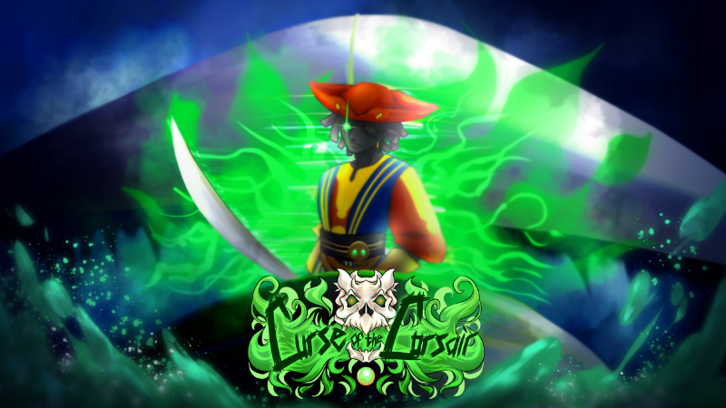
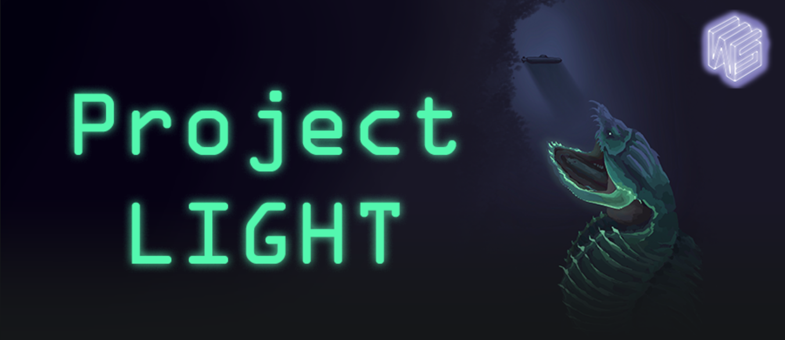
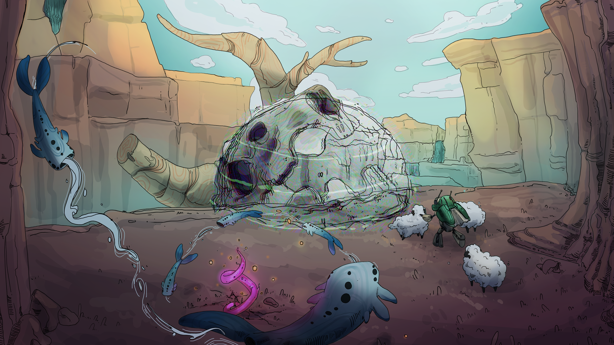

KT LoPorto
Audio Programmer
Audio Programmer
Audio Programmer

Curse of the Corsair is a single-player RPG created as a case study of Heart Machine’s Hyper Light Drifter. Within a 36 person studio, I worked on the audio team to create various sound effects and develop an appropriate sonic environment. Specifically, I focused on player weapon sound creation, audio integration, and world effects such as reverb zones.
Unity 2D, Ableton Live, Wwise, GitHub, Atlassian Suite
These variations were made for the players default sword weapon. All sounds were recorded and processed by me using a FIFINE K678 microphone and Ableton Live.
These variations were made for the players default sword weapon. All sounds were recorded and processed by me using a FIFINE K678 microphone and Ableton Live. All other sounds were found open source.
These variations were made for game's second boss, a waterlogged viking. Most sounds were recorded and processed by me using a FIFINE K678 microphone and Ableton Live. To achieve the squishy, gore sound, I recorded myself squishing a grapefruit.
This is a concept for the first boss of the game. This was completely done with MIDI instuments within AbletonLive. The concept for this boss was a flamboyant pirate so I took a lot of inspiration from Drag culture for the sound of this piece. I was also inspired by Gloria Esteban's Conga, since it is a classic within queer culture.
This is another concept for the first boss of the game. This baseline was inspired by bass riffs usually heard in club dance music.
This is a concept for the second boss of the game. This was completely done with MIDI instuments within AbletonLive. The concept for this boss was a drowned viking so I wanted it to sound foreboading and old. I took a lot of inspiration from sea shantities.

Project Light was a 3 month prototype for a case study of Subset Games’ FTL: Hyper Light Drifter. This project was completed by a 30 person team of Woverinesoft Studios developers. I worked as a member of the audio team where I developed conceptual SFX and BGM. I also took charge of implementing these assets within Wwise.
Unity 2D, Ableton Live, Wwise, GitHub, Atlassian Suite
Below are various SFX I created for this project. All sounds were recorded and processed by me using a FIFINE K678 microphone and Ableton Live. All other sounds were found open source.
Normal and Underwater variations
Hull Breach and Ship Destroy.
Open and Close
Hover, Select, and Slider
For my concept music, I drew inspiration from bioluminescent bays. Using AbletonLive, I created BGM loops for both the build and battle modes of our game loop.

Baacadia is a single player puzzle and exploration game developed as an AGP (Advanced Games Project) by a 30+ student team at the University of Southern California. In this game you play as Scout, a robot who awakes in a strange alien world, and shepherd mysterious sheep-like creatures through acoustics.
Unity 3D, Ableton Live, Wwise, Perforce, Notion
This system dynamically spawns raycasting emitters on each foot of a 3D rig that accurately play SFX based on the entity's grounded status and floor material. In this recording, I use the unity editor along with the Wwise audio profiler to demostrate the system accuracy.
Inspired by Sucker Punch Productions' Ghost of Yotei, this system uses controls 3 water emitters, one that follows the player and two that intermittently travel down the spline, to produce an accurate river auditory experience.
As our game features a lot of cave travel, I made use of Wwise's AkRooms and AkPortals system to create reverb zones.
I also assisted in workshopping various sound effects during initial development.
This was created via a custom vital synth I developed.
This was created via a custom vital synth I developed. The recording is me plucking notes on a keyboard to illustrate the sustain.
These are spliced together building blocks I developed for Scout, inspired by Riot's sound design methodology. Some of these SFX are creative commons files obtained from FreeSound.org that were processed by me using AbletonLive12, while others are created via custom Vital synths.